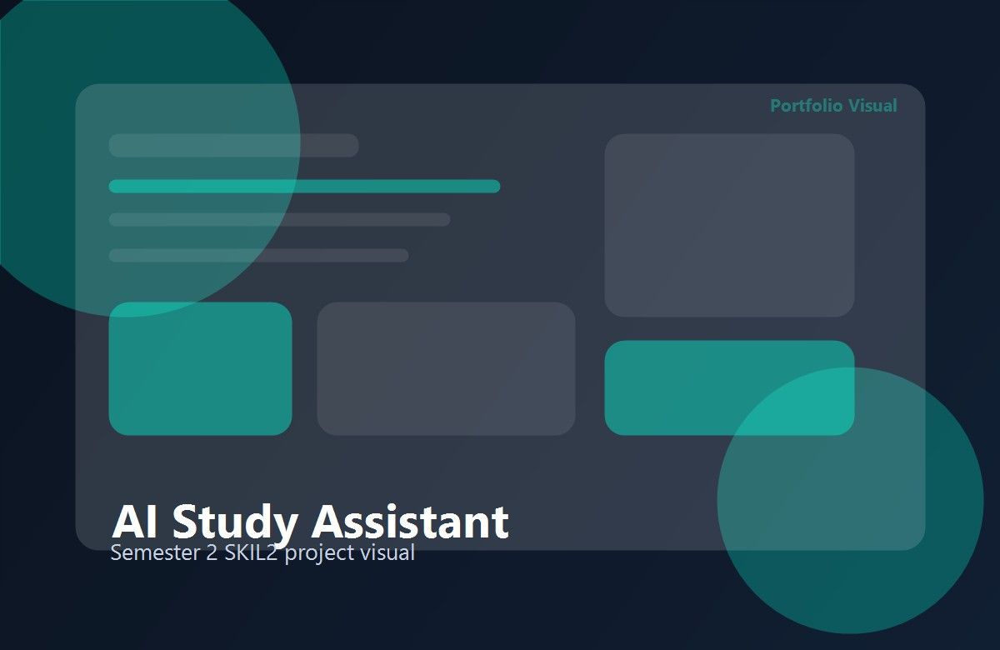
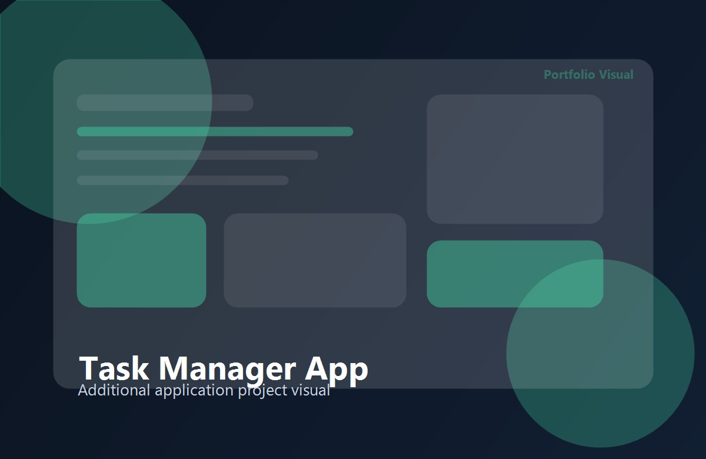
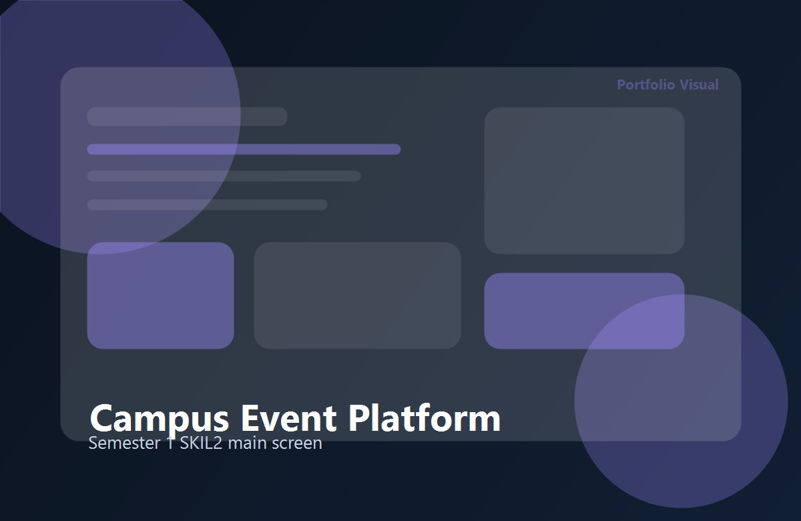
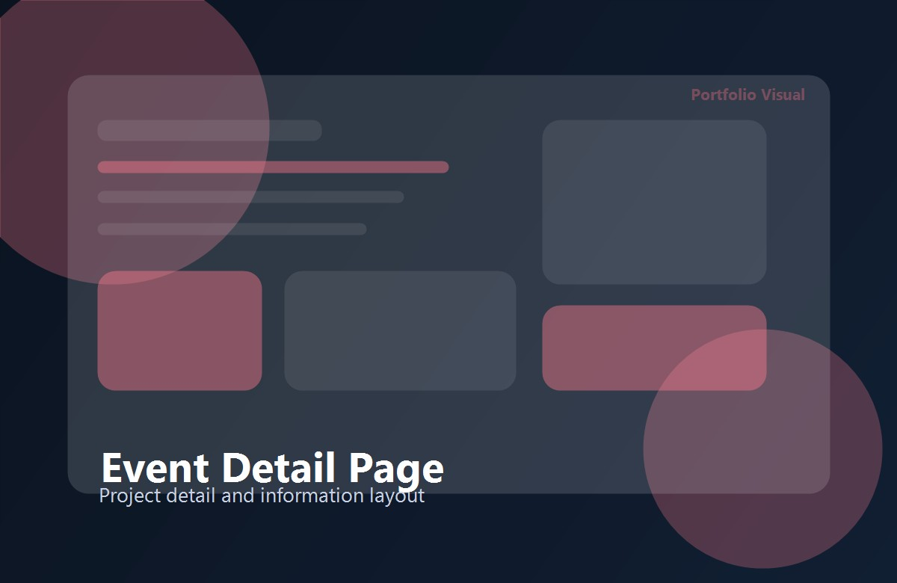
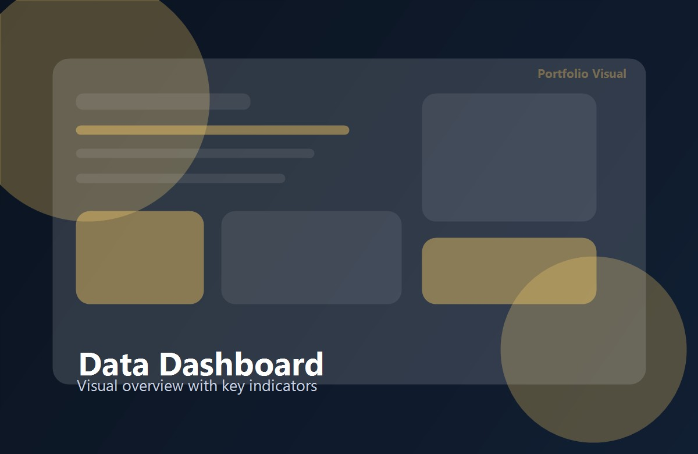

Project semester 2 SKIL2
AI study assistant with ongoing progress in interface design, prompt flow, and practical testing.
The projects below are ordered from strongest overall impact to supporting work. Each one explains the context, realisation, learning outcomes, and my personal contribution.
This overview gives a quick ranking before the detailed project descriptions.
AI study assistant with ongoing progress in interface design, prompt flow, and practical testing.
Campus event platform realised in a team with planning, development, and presentation work.
Personal full-stack project focused on CRUD logic, planning flows, and clear user interaction.
This semester project belongs to the SKIL2 project course and contributes to the ECTS-based semester workload. The purpose is to create a study assistant that helps users structure questions, review content, and find learning support in a guided way.
The project combines user-oriented application design with AI-oriented thinking and practical testing.
I designed a web interface with a dashboard, conversation area, and learning panels. The current build includes navigation flow, visual structure, and a staged approach for AI-supported answers and revision prompts.


Hard skills: interface structuring, AI-oriented thinking, feature planning, and progressive implementation.
Soft skills: iterative communication, presenting progress clearly, and adjusting scope during the semester.
I worked on the interface concept, project structure, feature planning, and the translation from idea to a concrete application flow. I also prepared the explanation of how the solution supports students in practice.
In semester 1, the task was to develop a useful campus-focused platform within the SKIL2 project course that formed part of the ECTS-linked semester workload. The purpose was to improve the visibility of activities and allow students to browse events in a more structured way.
The project required planning, division of tasks, and communication within a small team.
The team built a web platform where users could explore activities, read event information, and manage content in an organised interface. We created layouts, user flows, and working screens that supported the presentation of event data.


Hard skills: web structure, frontend implementation, teamwork in development, and translating requirements into working screens.
Soft skills: collaboration, reporting progress, accepting feedback, and managing shared responsibilities.
My contribution focused on coordinating part of the implementation, shaping the interface structure, and helping the team align technical work with the project goal. I also supported explanation and presentation of the result.
I created this self-initiated project outside a formal ECTS course to improve my understanding of structured application logic. The purpose was to design a practical tool for organising tasks, priorities, and progress in one place.
The app includes task lists, status management, and a clean interface for adding, editing, and reviewing work items. It helped me practise the flow from user requirement to interface logic and implementation structure.
Hard skills: CRUD thinking, component structure, data handling, and interface clarity.
Soft skills: working independently, organising steps, and documenting what was built.
This was my own project, so I handled the full process from concept and layout to implementation and review.
I developed this dashboard as an extra project outside a formal ECTS course to practise turning raw data into readable information. The purpose was to make patterns easier to understand through a visual overview.
I built a dashboard layout with key indicators, charts, and summary panels. The result is a compact interface that helps users interpret data faster and supports simple reporting.

Hard skills: data visualisation thinking, information hierarchy, and layout decisions based on clarity.
Soft skills: analytical communication, concise reporting, and choosing the right level of detail for the audience.
I was responsible for the dashboard concept, the translation of data into readable interface blocks, and the final presentation of the outcome.
These competencies are visible across the projects above and are stated explicitly here for clarity.
I identify the user need, define the project purpose, and translate the brief into a workable plan.
I build interfaces, project structures, and functional components that turn an idea into a real result.
I think about usability, maintenance, and the practical way a user interacts with the final product.
I explain progress, present outcomes, and document decisions in a clear and professional way.
I work with planning, task division, priorities, and step-by-step progress across individual and group work.
I aim for reliable work, respectful collaboration, and solutions that fit the assignment instead of adding unnecessary complexity.